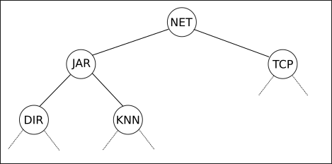
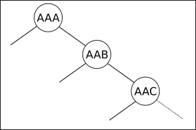
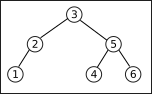
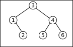
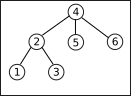
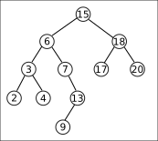
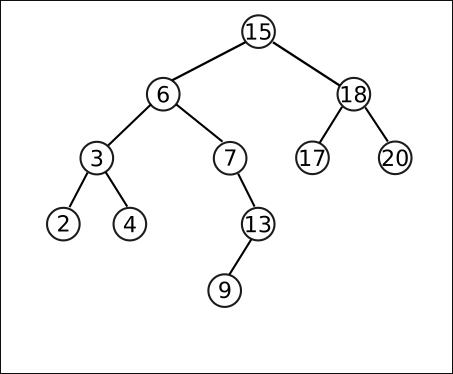

Arbres Binaires de Recherche (ABR)
Premier Exemple
D'après Numérique et Sciences Informatiques, 24 leçons avec exercices corrigés, Balabonski, Conchon, Filliâtre, Nguyen, Editions Ellipses
Imaginez une bibliothèque contenant un extrêmement grand nombre de livres. Cette bibliothèque est organisée de la manière suivante :
- Il y a 17 576 pièces différentes.
- Chaque pièce est repérée par une suite de trois lettres, et dans cette pièce sont rangés tous les livres dont les titres commencent par ces trois lettres.
- Chaque pièce possède deux sorties, une à droite et une à gauche.
- La sortie de gauche mène toujours soit à une salle dont les trois lettres sont situées avant dans l'ordre alphabétique, soit nulle part.
- La sortie de droite mène toujours soit à une salle dont les trois lettres sont situées après dans l'ordre alphabétique, soit nulle part.
Une représentation de cette bibliothèque peut être donnée sous la forme d'un arbre binaire tel que le suivant :

Question
- Dans cet arbre, préciser où sont situés les livres dont le titre commence par :
KNUUDPJET
- Pourquoi y a-t-il 17 576 pièces différentes ?
A venir !
Cette répartition, pour peu qu'elle soit correctement faite (c'est-à-dire que le choix des lettres soit pertinent), peut être incroyablement efficace. Dans le meilleur des cas, il ne faudra traverser qu'au maximum 15 salles pour trouver n'importe quel livre. En effet, si la bibliothèque est correctement organisée, quasiment chaque nœud aura 2 sorties, d'où un arbre (presque) parfaitement équilibré, qui vérifiera quasiment la règle \(N = 2^h-1\) (voir le cours précédent). La hauteur sera donc d'environ \(log_2(17 576)\) soit environ \(15\).
Cette structure sera particulièrement utile pour effectuer des recherches : on l'appelle ainsi un arbre binaire de recherche (ou BST, Binary Search Tree en anglais).
Une mauvaise répartition
L'importance de l'organisation des salles est ici primordial, toutes les solutions ne se valant pas. Ci-dessous une répartition qui est dans le pire des cas : les sous-arbres gauches sont toujours vide (on appelle un tel type d'arbre un peigne).

Dans cette situation, il faudra traverser les 17 576 pièces pour atteindre les livres dont le titre commence par ZZZ.
Arbres Binaires de recherches et algorithmes
Définition
Arbre Binaire de Recherche (ABR)
Un ABR ou Arbre Binaire de Recherche est un arbre binaire vérifiant les propriétés suivantes :
- les noeuds contiennent des valeurs appelées clés pouvant être comparées entre elles (nombres, chaines de caractères, ...) ;
- toutes les clés situées dans le sous-arbre gauche (resp. droit) d'un noeud sont inférieures (resp. supérieures) à la clé du noeud.
Exemples

Il s'agit bien d'un ABR.

Il s'agit bien d'un ABR. On peut remarquer qu'il possède le même ensemble de noeuds que le précédent, mais pas dans le même ordre.

Ce n'est pas un ABR, le noeud 5 étant dans le sous-arbre gauche du noeud 4, alors que les sous-arbres gauches doivent posséder des clés de valeurs inférieures.

Ce n'est pas un ABR tout simplement parce qu'il n'est pas binaire.
Exercice
Appliquer à la main les parcours préfixe, infixe et suffixe pour chacun des exemples d'ABR précédents. Que remarque-t-on ?
A venir !
Principe de l'implémentation en Python
Il n'y a aucune différence entre un ABR et un arbre binaire en terme d'implémentation, on pourra donc conserver :
- les objets
Node, avec ou sans référence au nœud parent ; - les fonctions
hauteur,tailleetest_vide; - les fonctions
visitePrefixe,visiteInfixeet`visiteSuffixe, mais on utilisera surtout les parcours infixes au vu de la remarque de l'exercice précédent.
Recherches dans un ABR
Recherche d'une clé
Un ABR est spécialement conçu pour la recherche, particulièrement pour la recherche récursive. La méthode est la suivante :
Algorithme de recherche
On compare la valeur cherchée avec la clé de la racine :
- si elle est égale, la valeur est trouvée et on peut renvoyer
Vrai; - si elle est inférieure, alors on recherche récursivement dans le sous-arbre gauche ;
- si elle est supérieure, alors on recherche récursivement dans le sous-arbre droit.
Si on atteint une feuille dont la clé n'est pas la valeur recherchée, on sait alors que la valeur recherchée n'est la clé d'aucun nœud, elle ne figure donc pas dans l'arbre de recherche. Pratiquement dès qu'on tombe sur un arbre vide, on peut affirmer que la clé n'est pas dans l'arbre, et on renvoie Faux.
Implémentation en Python
Si on suppose que tree est est ABR, la fonction de recherche de la clé x dans tree s'écrit :
def appartient(x, tree) :
if tree == None :
return False
elif tree.valeur == x :
return True
elif x<tree.valeur :
return appartient(x, tree.gauche)
else :
return appartient(x, tree.droit)
En termes de complexité, dans le pire des cas (arbre peigne), la complexité dépend de la taille de l'arbre. On est donc dans une complexité linéaire (en \(\mathscr{O}(n)\)), ce qui n'est pas meilleur que la recherche dans une liste chainée. Mais si l'arbre est équilibré, la recherche devient en \(\mathscr{O}(log_2(n))\), ce qui est considérablement plus rapide.
Pour comprendre cette différence de rapidité regardez le tableau suivant donnant les valeurs de \(log_2(n)\) :
| \(n\) | \(log_2(n)\) |
Recherches de clés particulières
Exercice
- Où se trouve le plus petit élément d'un ABR ? En déduire l'implémentation en Python d'une fonction
minimum(tree)renvoyant la clé minimale de l'ABR, etNonesi l'arbre est vide. - Faire de même une fonction
maximum(tree). - Quelles sont les complexités de ces deux fonctions dans le pire des cas ?
A venir !
Recherche du successeur d'une clé
On appelle successeur d'une clé donnée la valeur suivant cette clé lors du parcours infixe de cet arbre. Bien qu'il soit facile de déterminer un successeur en parcourant l'arbre, il existe un algorithme beaucoup plus rapide n'utilisant pas la comparaison des clés :
Déterminer le successeur d'un noeud
On considère l'ABR suivant :

- Quel est le successeur de 15 ? de 17 ? de 13 ? de 20 ?
- Pour la structure d’ABR de l’arbre, que représente chacun de ces successeurs vis-à-vis du noeud initial ?
-
Compléter la phrase suivante :
Quote
En utilisant la structure d’un ABR, on déduit la méthode suivante pour déterminer le successeur d’un noeud \(A\) :
- si le sous-arbre droit de \(A\) est non vide, alors le successeur de \(A\) est .......... de ce sous-arbre droit ;
- si le sous-arbre droit de est vide et que \(A\) possède un successeur (il n'est pas le maximum de l'arbre), alors ce successeur est le premier ........ de \(A\) dont le ........... est aussi ancêtre de \(A\).
Une limite ?
Il est à noter que cette méthode de recherche nécessite d'avoir un arbre doublement chaîné, c'est-à-dire où chaque noeud possède un lien vers son parent. Dans ce cas un algorithme exact de cette méthode est :
fonction successeur(x) :
Si x.droit est non-vide
Renvoyer minimum(x.droit)
Sinon
y = x.parent
TantQue y est non-vide et x == y.droit Faire
x = y
y = x.parent
Retourner (y)
Recherche du prédeceseur
Comment rechercher efficacement le prédeceseur d'un noeud dans un ABR ?
A venir !
Insertion dans un ABR
Jusqu'à maintenant, nous avons travaillé en supposant que les arbres avec lesquels nous travaillons sont bien des ABR. Mais comment les créer ?
Cette quaestion revient à se demander comment ajouter un noeud à un ABR déjà existant, éventuellement vide. Cette oprétaion n'est pas évidente, car il faut conserver après l'ajout la structure d'ABR. Il existe plusieurs solutions, mais nous ne nous intereserons qu'à une seule : l'insertion aux feuilles.
Dans cette méthode, les nouveaux noeuds sont ajoutés en tant que feuilles du nouvel arbre, là où elles devraient être en conservant la structure d'ABR.
Application manuelle

On considère l'ABR ci-dessus : Insérer les noeuds de valeurs suivantes : 23, 19, 1 10, 8 et 5.

L'insertion aux feuilles d'un élément dans un ABR se fait tout comme une recherche : on cherche la clé du nœud à insérer ; lorsqu'on arrive à une feuille, on ajoute le nœud comme fils de la feuille en comparant sa clé à celle de la feuille : si elle est inférieure, le nouveau nœud sera à gauche ; sinon il sera à droite.
Un algorithme possible est :
fonction Insertion(tree, elem)
Si tree est vide
retourner Noeud(elem,None,none)
Sinon
Si elem < tree.valeur
retourner Noeud(tree.valeur,Insertion(tree.gauche, elem),tree.droit)
Sinon
retourner Noeud(tree.valeur,tree.gauche,Insertion(tree.droit, elem))
Implémentation en Python
Implémenter une fonction insertion(tree, elem) qui insère aux feuilles l'élement elem dans l'ABR tree.
A venir !
Exercice
On considère les listes l1 = [15,12,7,8,1,23,13] et l2 = [7,1,23,13,15,8,12].
- Créer à la main les ABR représentants ces listes en utilisant la méthode de l'insertion aux feuilles.
- Implémenter ces ABR en Python, et calculer leurs tailles et leurs hauteur.
- Effecvtuer un parcours infixe sur chacun de ces ABR. Que remarque-t-on ?
A venir
Une autre forme de tri ?
En s'aidant de l'exercice précédent, créer une fonction triABR(liste) qui trie une liste qui lui est pasée en argument en utilisant un ABR.
A venir